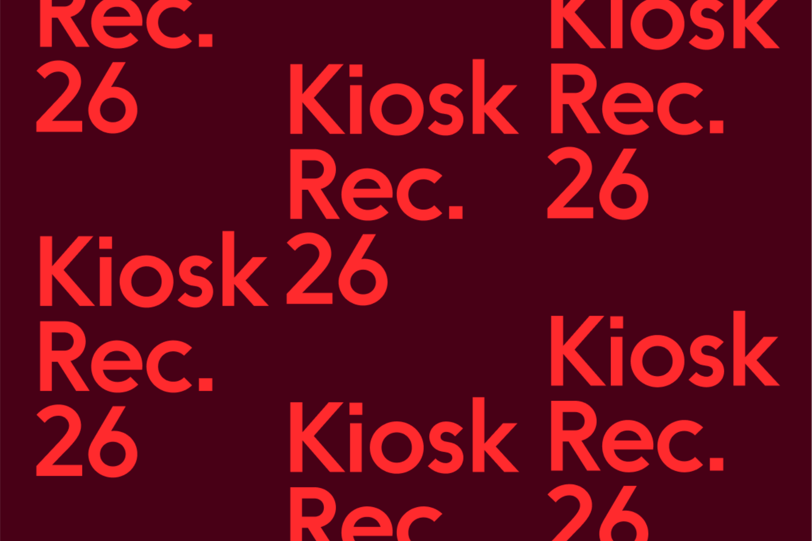
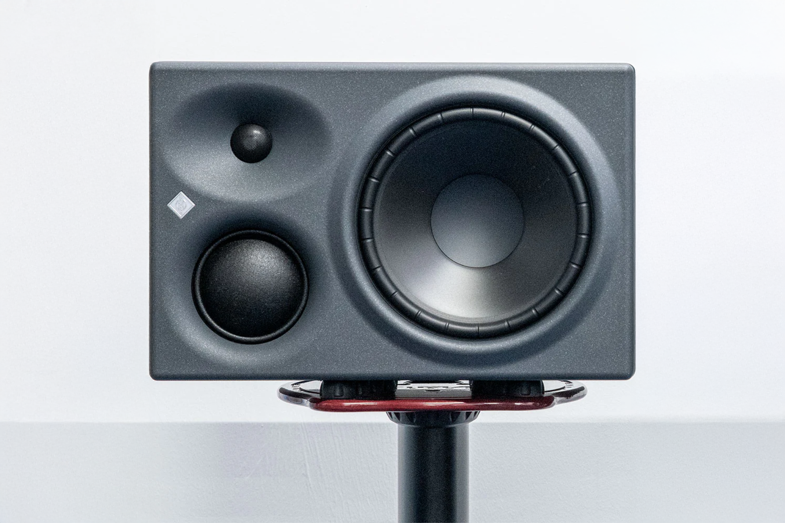

00 · Cover
#131313
South London

Kiosk
Recording®
- Located
- Unit 2, Plough Way
SE16 7FQ, London - Practice
- Songwriting, production,
recording & mixing - Run by
- Tom Rea
Dougal Gray - Enquiries
- info@kioskrecording.studio
Kiosk Recording® is an independent music studio in South London, run by Tom Rea and Dougal Gray.
We focus on making records with clarity and momentum. Big ideas, done quickly and properly. We work across songwriting, production and finishing — helping take tracks from rough demos to something ready to release.




01junodreamPools of ColourMix · Producer · Engineer · Composer↗
02junodreamDream UntitledMix · Producer · Engineer · Composer↗
03junodreamDeath Drive 2.0Mix · Producer · Engineer · Composer↗
04junodreamThe Beach 2.0Mix · Producer · Engineer · Composer↗
05junodreamTravel GuideMix · Producer · Engineer · Composer↗
06junodreamIsn’t It Lovely (To Be Alone)Producer · Engineer · Composer↗
07junodreamTo The MoonMix · Producer · Engineer · Composer↗
08junodreamGalacticaProducer · Engineer · Composer↗
09Talie RaeBlueProducer · Engineer↗
10KorderFalling AwakeMix↗
11KorderWavesMix↗
12Samuel AustinLocksmithMix
13Samuel AustinWeMix · Producer · Engineer
14Angel ParkerThe House of the PoetMix · Producer · Engineer↗
15Porcelain TwinEverybody RunningMix↗
16Joe Khalique-BrownThe GetawayMix↗
17Somesuch · Super 8And Then There Were TwoMix · Producer · Engineer · Composer · Soundtrack
18Saturday BornFilm by SaabeahProducer · Engineer · Composer · Soundtrack

- i.Songwriting
- ii.Production
- iii.Recording
- iv.Mixing
Outboard 04
- Neve 1073 DPX
- Focusrite 828 MKII
- Universal Audio Apollo X8
- Tech 21 SansAmp RBI
Monitors 03
- Neumann KH310A (Pair)
- NOS McOne Passive Monitor Controller
- Beyerdynamic DT770 Pro (×2)
Microphones 07
- Neumann TLM 102
- AKG C414
- AKG D190E
- Line Audio Omni1 (×2)
- Shure SM7B
- Shure SM57
- Audio-Technica ATM250
Guitars / Bass / Amps 08
- Fender Telecaster (American) Custom 60’s Reissue
- Fender Stratocaster (American)
- Gibson Les Paul Traditional
- Hofner Ignition Bass
- Fender Bronco Bass
- Marshall JCM2000
- Fender Blues Junior
- Kemper Rig Profiler Rack
Keys / Synths 05
- Knight K10 Upright Piano
- Sequential Prophet 6
- Moog Little Phatty
- Yamaha Portasound PS3
- Arturia Wireless MIDI Keyboard
Get in touch.
→ info@kioskrecording.studio
- Located
- SE16 7FQ
London - Hours
- By appointment only
- Run by
- Tom Rea
Dougal Gray - Elsewhere
- ↗ @kioskrecording